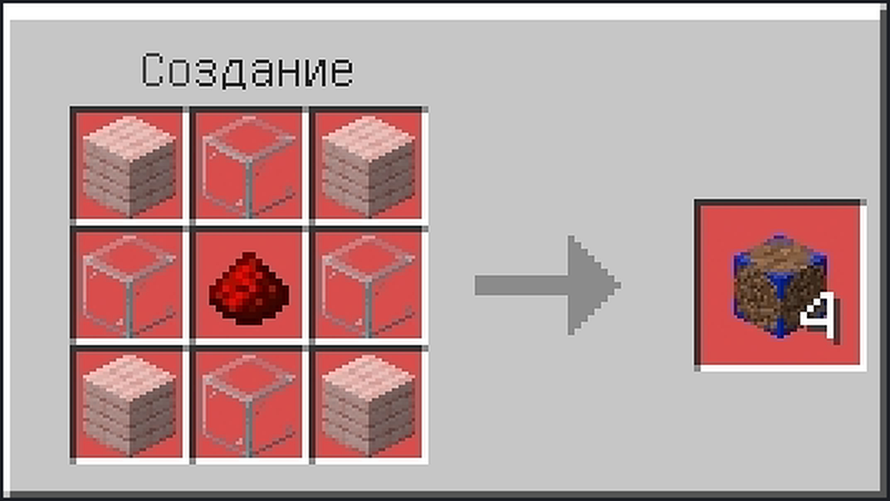
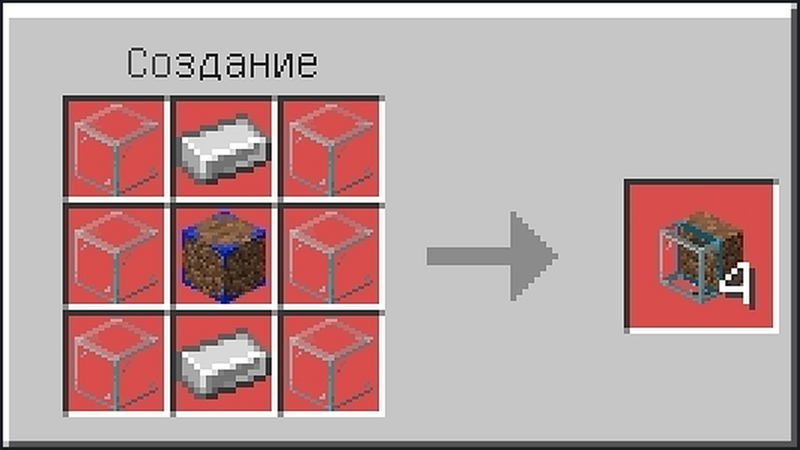
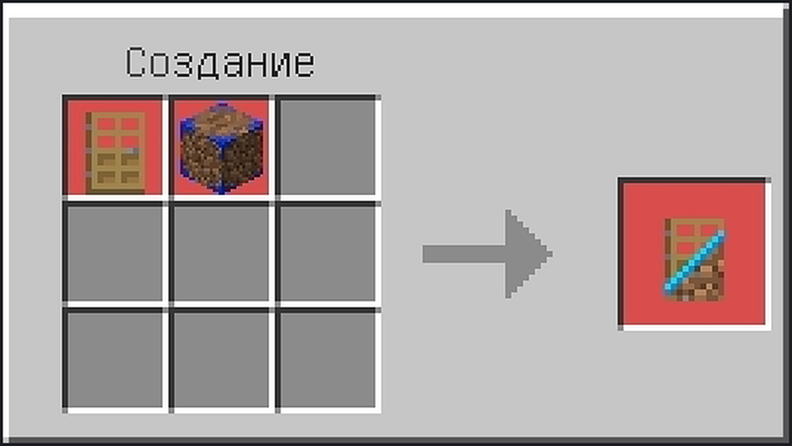
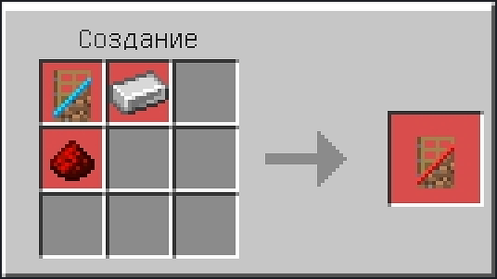
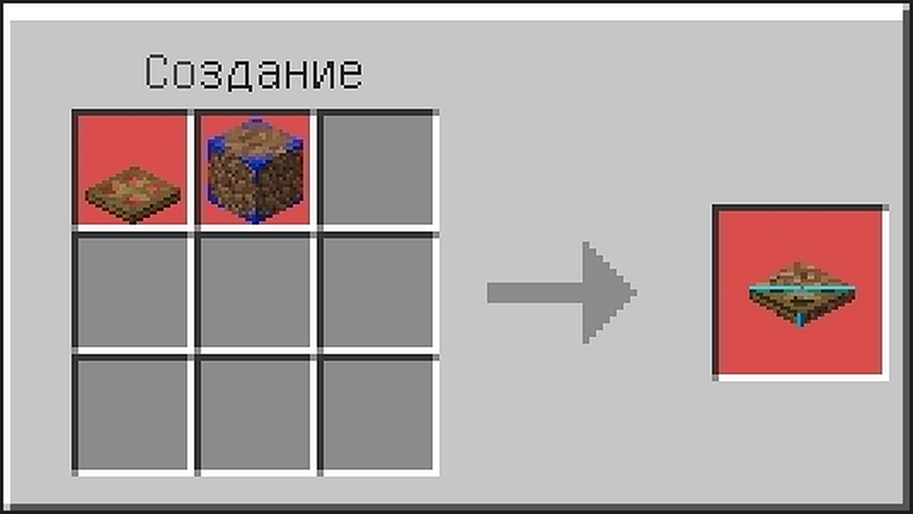
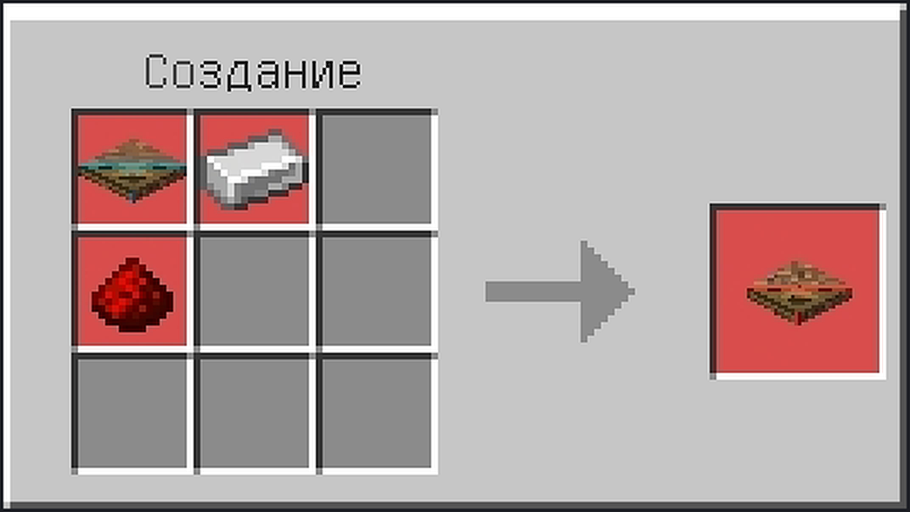
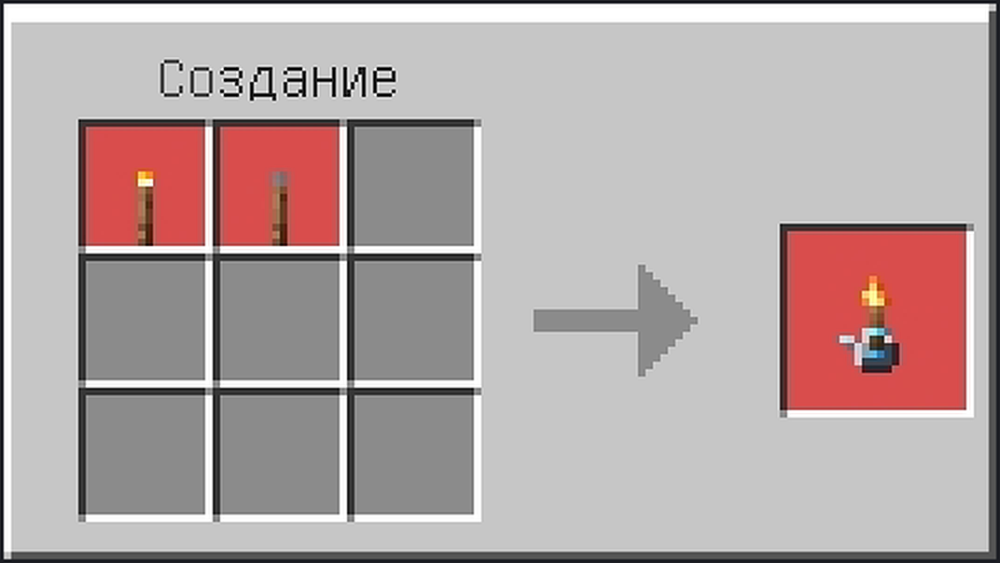
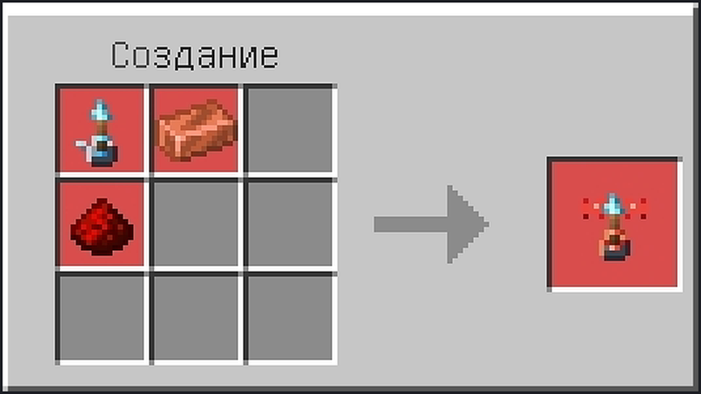

01
Decoy Block

Any planks
Glass
Any planks
Glass
Redstone dust
Glass
Any planks
Glass
Any planks
Result: Decoy Block ×4
The gateway item — every other craft starts here.
All ten crafts, with grids, words and screenshots. The Decoy Block is the gateway — everything else is built from it.
Every card repeats the grid in words — left to right, top to bottom, one label per slot. Colour follows the ingredient. Screenshots were captured on a Russian-locale client, so the crafting-table header is localised; the recipe is identical in every language.

The gateway item — every other craft starts here.

Cheap enough to line a whole corridor.

Shapeless alternative: wooden door + Decoy Block → 1. A double door costs one craft.

Hand-locked: redstone power or a linked remote torch only.

Shapeless alternative: wooden trapdoor + Decoy Block → 1.

Locked hatch — nobody opens it by accident.

Wired version: power 15, behaves exactly like a vanilla lever.
Same power 15 with the cold blue light of soul fire.
Zero redstone output. Opens a vault from another room.

Wireless with soul light — the remote you can find in the dark.
Recipes 03 and 05 also accept a shapeless fallback — any wooden door or trapdoor plus a Decoy Block. Recipes 04, 06, 07, 08, 09 and 10 are shapeless to begin with.
_rs variant.| Recipe | Yield | Shape |
|---|---|---|
| Decoy Block | 4 | Fixed grid |
| Decoy Spy Glass | 4 | Fixed grid |
| Decoy Door | 2 | Fixed grid or shapeless fallback |
| Redstone Decoy Door | 1 | Shapeless |
| Decoy Trapdoor | 2 | Fixed grid or shapeless fallback |
| Redstone Decoy Trapdoor | 1 | Shapeless |
| Torch Lever / Soul Torch Lever | 1 | Shapeless |
| Remote Torch Lever / Remote Soul Torch Lever | 1 | Shapeless |
_rs recipes accept any arrangement.